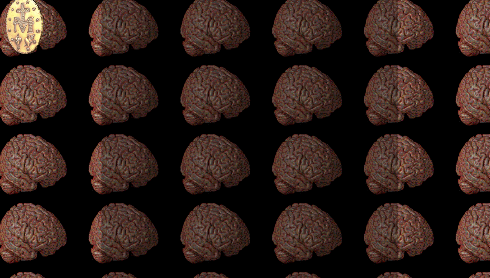

Spinning Bubble Gum

Spinning Bubble Gum is an interactive website that explores digital chaos and generative web design through a randomized selection of looping videos, synchronized audio, and tiled, low-resolution rotating GIFs. The project embraces a distinct retro aesthetic, creating an immersive and unpredictable user experience every time the page refreshes.
Developed entirely through independent programming and design, the site highlights custom web logic, algorithmic asset distribution, and multimedia synchronization. The technical workflow combines HTML, media playback controls, and randomization scripts to build a playful, web-based digital environment.